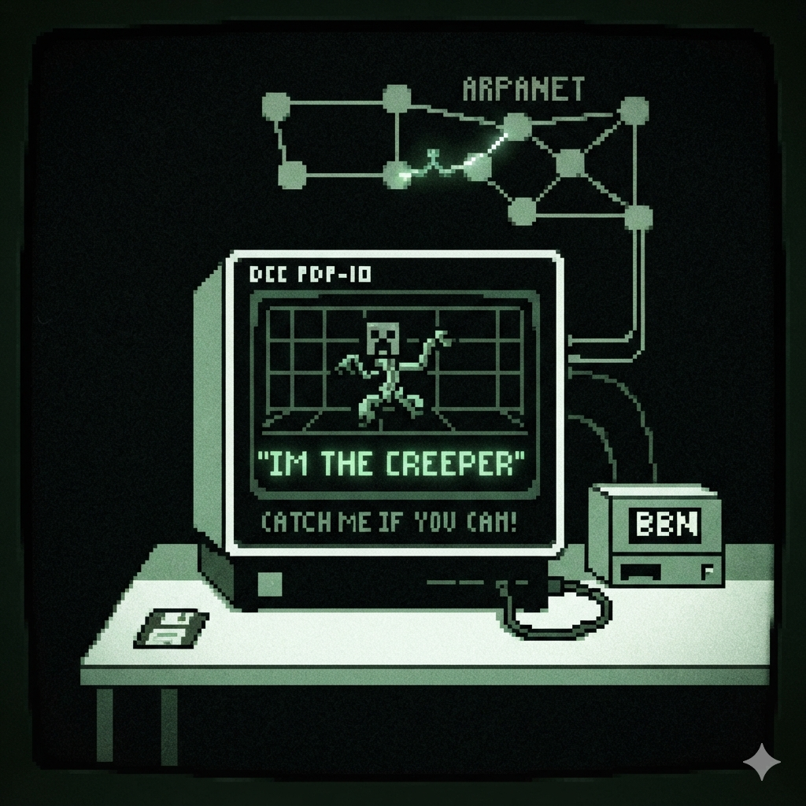
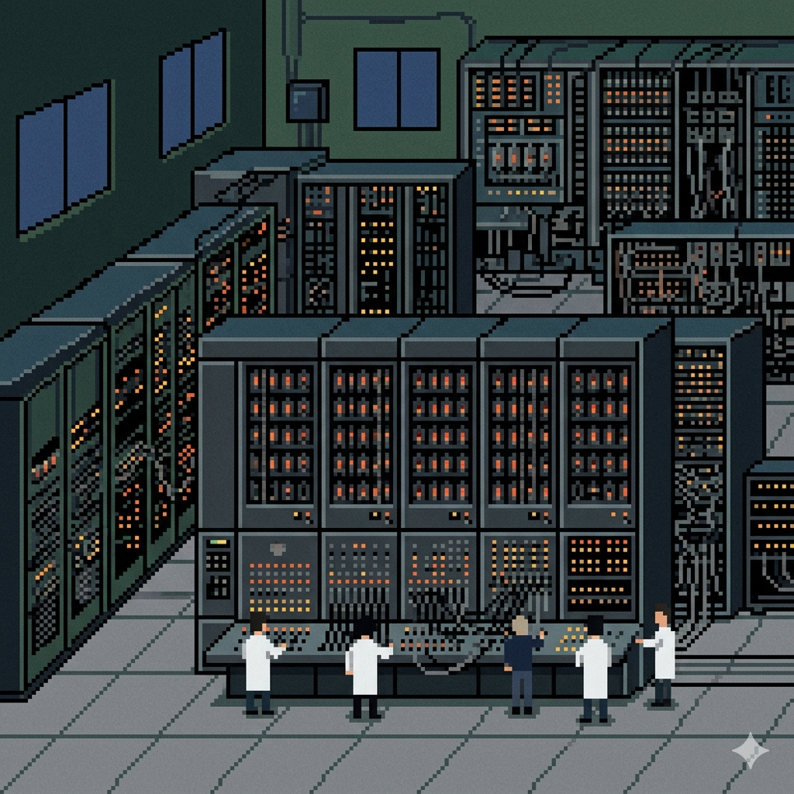
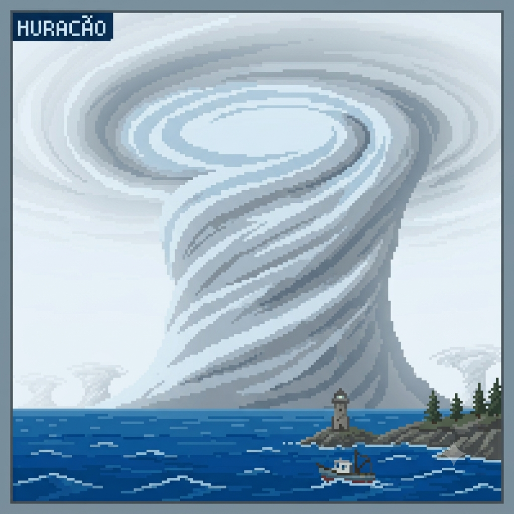
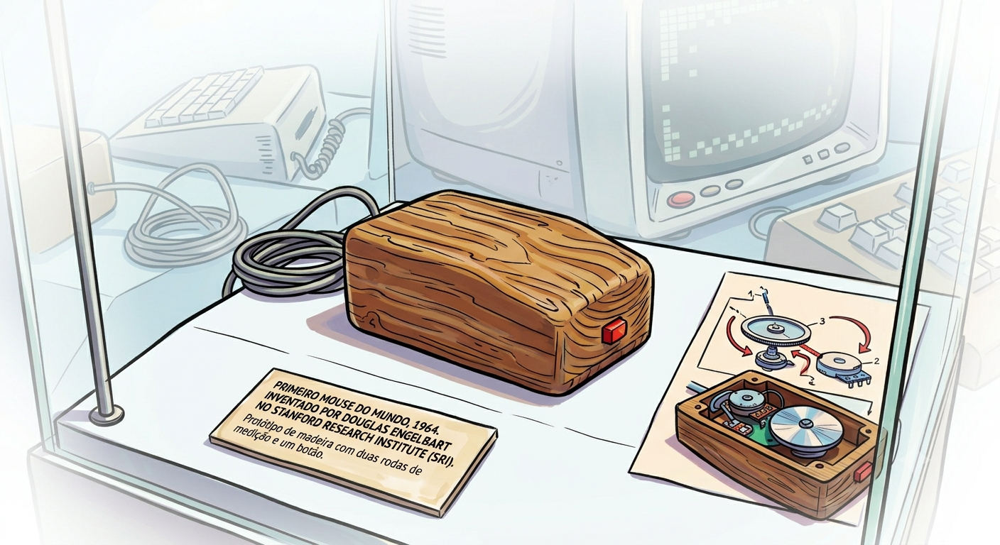

Meu primeiro post
Por: Benicio de Lucio
Boas-vindas ao meu novo blog! Aqui vou compartilhar dicas de programação e curiosidades da área de tecnologia
Vou compartilhar conhecimentos sobre tecnologia e programação
Por: Benicio de Lucio
Boas-vindas ao meu novo blog! Aqui vou compartilhar dicas de programação e curiosidades da área de tecnologia

Por: Benicio de Lucio
Em 1971, surgiu o Creeper, um programa experimental que não destruía arquivos, apenas exibia a frase: "Eu sou o Creeper, pegue-me se puder!"
Fonde: moxso.

Por: Benicio de Lucio
O ENIAC, ativado em 1946 nos Estados Unidos por John Mauchly e J. Presper Eckert, foi o primeiro computador eletrônico digital de grande escala do mundo. Ele foi construído para ajudar o exército americano com cálculos balísticos complexos.
Fonde: tecnoblog

Por: Benicio de Lucio
O El Niño é o aquecimento anormal das águas do Oceano Pacífico Equatorial que altera o clima global por meses. No Brasil: Provoca seca no Norte e Nordeste, e chuvas intensas no Sul. No mundo: Causa secas na Ásia/Oceania e tempestades na América do Sul. Frequência: Ocorre de forma irregular a cada 2 a 7 anos.
Fonte: Brasil Escola
Por: Benicio de Lucio
Estima-se que 90% de todos os dados existentes no mundo hoje foram gerrados apenas nos últimos dois anos.Vivemos em uma verdadeira explosao de informacao que nao para de acelerar
Fonte: sintef

Por: Benicio de Lucio
Antes do design ergonomico e das luzes RGB,o primeiro mouse foi construido em madeira!Criado por Douglas Engelbart em 1964, ele tinha o formado de uma caixa quadrada e apenas um botao
Fonte: quallit